← NIX · Prefer pictures? Easy guide
Setup guide
From install to your first hunt takes about five minutes. Town trips need a few more steps, and everything else is optional. The screenshots come from a simulated game page, so your skills, icons and numbers will differ; the panel and its labels are the real ones.
1. Install
- Install Tampermonkey in your browser.
- Open the bot script and confirm the install in Tampermonkey.
- Turn off any other OpenSRO bot script. Two bots cannot run together; the second one refuses to start.
- Reload the game. The panel appears at the top right, with the version in its title bar.
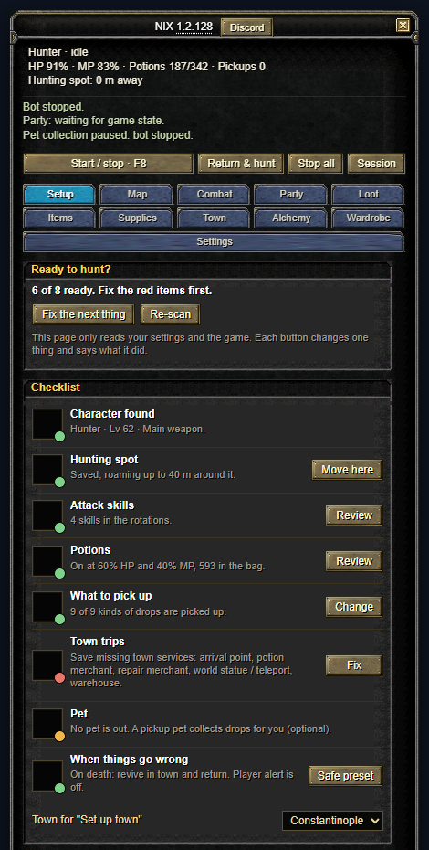
Drag the panel by its title bar; it reopens in the same spot after a reload. The Wide button opens a wider window with HP, MP and EXP bars, the pages as a list on the left, session numbers on the right and the activity log at the bottom; Compact switches back. The Map page shows the game’s minimap around you with your hunt radius; click a point and press Make this the hunting spot to hunt there. F8 starts and stops the bot, F7 folds the panel, Shift + F7 hides or shows it without stopping the bot. The × at the top right minimises the panel to a small icon you can drag anywhere: its dot is green while hunting, yellow during a town trip and red when stopped, it glows when something needs you, and a click (or F7) brings the panel back. When a new version is out, an Update button appears next to the version: install it in Tampermonkey, then reload the game.
Settings are saved separately for each character, so every character is set up once.
2. Your first hunt
The Setup page
New characters open on the Setup page, a checklist of what the bot needs: character, hunting spot, attack skills, potions, what to pick up, town trips, pet and what happens on death. Every row says what is missing and has a button that fixes it or opens the right page; Fix the next thing takes you to the first red item. Starter settings (Level up, Farm drops, Safe AFK) show every change before you apply them and can be undone. The steps below do the same by hand.
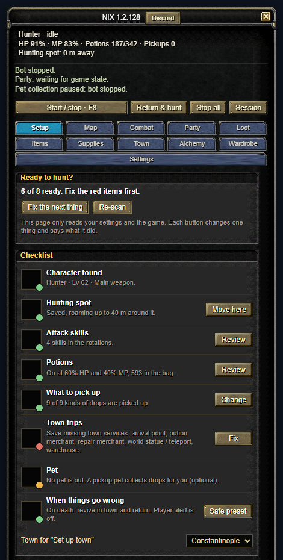
Step 1: save your hunting spot
Stand where you want to hunt. Open Combat → Hunt area and press Set hunting spot here. The bot fights inside the Hunt radius around that spot and returns to it when idle. Use Monster classes to choose what to attack, and the level and name filters to skip mobs you do not want.
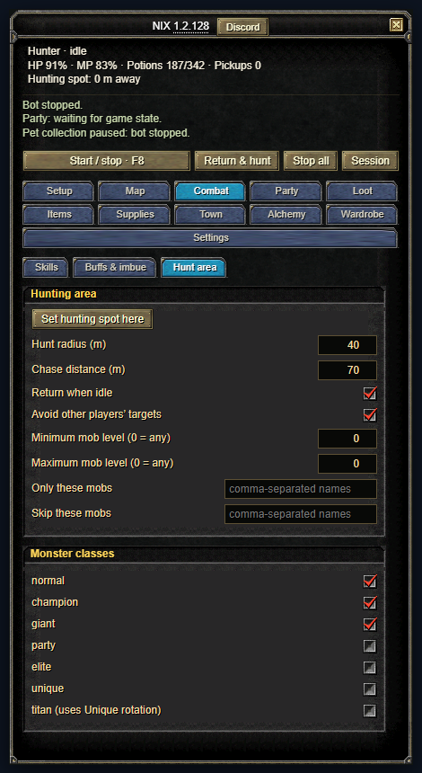
Step 2: choose your attack skills
Open Combat → Skills (the first screenshot above). Click a skill icon under Learned attack skills to add it to the rotation, click it again to remove it, and use the arrows to change the order. Hover an icon to see its level, MP cost and cooldown. The tabs at the top (Normal, Champion, Giant and so on) give each monster class its own rotation; a class with none uses the Normal rotation. Only skills your character has learned are offered.
If a rotation skill cannot be used (cooling down, not enough MP, paused after a server rejection), the bot falls back to a normal attack, and the status line says why.
Step 3: buffs and weapon imbue
Open Combat → Buffs & imbue. Click the self-buffs you want kept up, and pick your weapon imbue (the highest learned level is used automatically). Buffs are recast shortly before they expire.
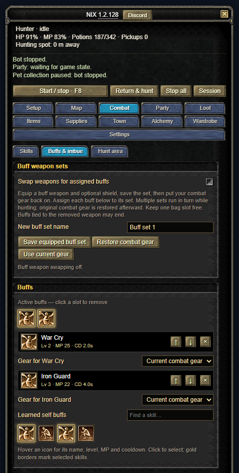
Weapon swapping for buffs is optional. If you use it, equip the buff weapon, save it as a set, then put your combat gear back on. Keep one bag slot free. The page lists each buff assigned to a set with the seconds it has left and says what the swap is waiting for: the weapon only changes when a buff is about to end.
Step 4: potions
Open Supplies → Automatic potion use. Leave Use potions automatically on and set when HP and MP potions are used. Vigor potions have their own thresholds and are used when HP or MP is very low. Cure pills handle abnormal states.
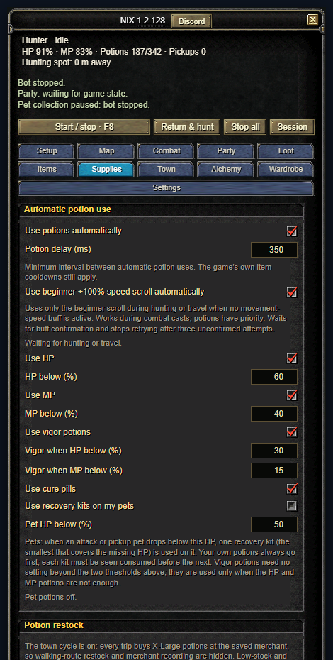
Step 5: loot
Open the Loot tab. Under Who picks up what, set every kind of drop to Leave on the ground, Pickup pet or Character, so the pet and the character can work side by side (see Pet loot). The three buttons (Elixirs only, Elixirs + gold, All items) are quick presets. Always include names and Exclude names take comma-separated words.
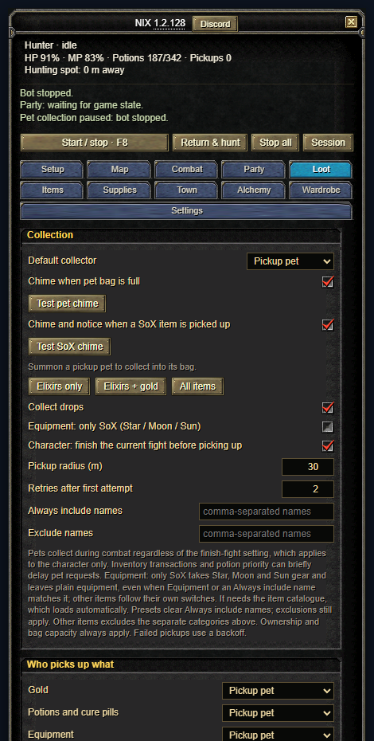
Step 6: start
Press F8, or Start / stop. Return & hunt walks back to the saved spot first and then starts. Stop all cancels hunting and any trip. If you control your character by hand, the bot pauses for a few seconds and then carries on.
3. Town trips
With the town cycle on, the bot uses a return scroll when potions run low or a bag is nearly full, walks through town (warehouse, potion merchant, repair merchant), refills and repairs, and returns to your last scroll point with a reverse scroll. Set it up once.
Before you start
- Bind your recall to Hotan, Jangan, Donwhang, Constantinople or Samarkand in the game.
- Carry gold, a few return scrolls and reverse return scrolls, and at least two free bag slots.
- Stop the bot while you save points.
Set the town points automatically
Open the Town page and scroll to Scroll town cycle. Pick your town in the Town list and click Set up this town; you do not have to be in town. The bot fills the arrival point (where that town's return scroll always lands), warehouse, potion merchant, repair merchant and world statue. Auto-set town services does the same for the town you stand in and only fills what is empty. Redo all automatically replaces everything.
Press it where the return scroll puts you if you can. If the saved arrival point is not where the scroll lands, the bot corrects it by itself after the first recall: once your character stands still in the town for three seconds, that spot becomes the arrival point.
Or save the points by hand
- Use a return scroll, and where it puts you click Save arrival point.
- Walk to the warehouse, stand a few steps in front of the NPC on open ground, select the NPC in the game, then click Save warehouse. Do the same for the repair merchant and the world statue / teleport.
- For the potion merchant, open its shop first, then click Save potion merchant.
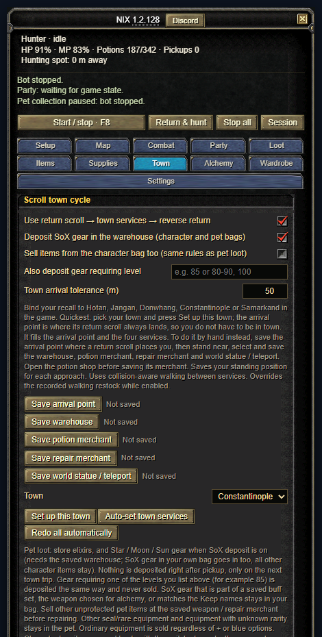
With manual saves the bot walks to the exact spot you stood on. If a merchant is too far from that spot, the trip stalls on the way there. Standing a few steps in front of the NPC, on open ground, avoids it.
Choose what to buy
In Potion restock tick Buy HP and Buy MP and set Low stock (a trip starts at or below it) and refill to (the total you want after shopping, counting what you carry). Town trips buy X-Large HP and MP potions. You can also buy vigor potions in the size you choose, and abnormal pills. Archers can tick Buy arrows or Buy bolts under Supplies → Arrows and bolts: they are bought at the repair merchant on the same trip, and equipping them is up to you.
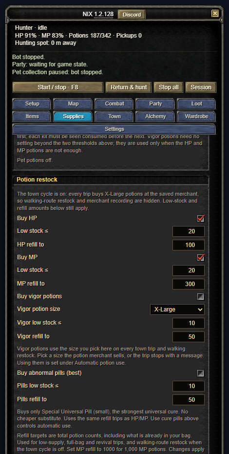
Turn it on
Tick Use return scroll → town services → reverse return, save your hunting spot, and start the bot. The same section lets you deposit gear in the warehouse (see below); returning when the pickup pet is nearly full and reviving in town after dying are under Go to town when…. F8 cancels a trip at any time.
What starts a trip
The top of the Town page shows the trip as pictures: return scroll, warehouse, potions, repair and reverse, with what each step still needs. Under Go to town when… are the reasons a trip starts. A nearly full bag and low potions always count. You can also send the bot to town when the pickup pet is nearly full, when your weapon is broken (on by default), when your gear is worn below a percentage, after no XP for a while, or on a timer. The XP and timer clocks only run while hunting and restart with every trip.
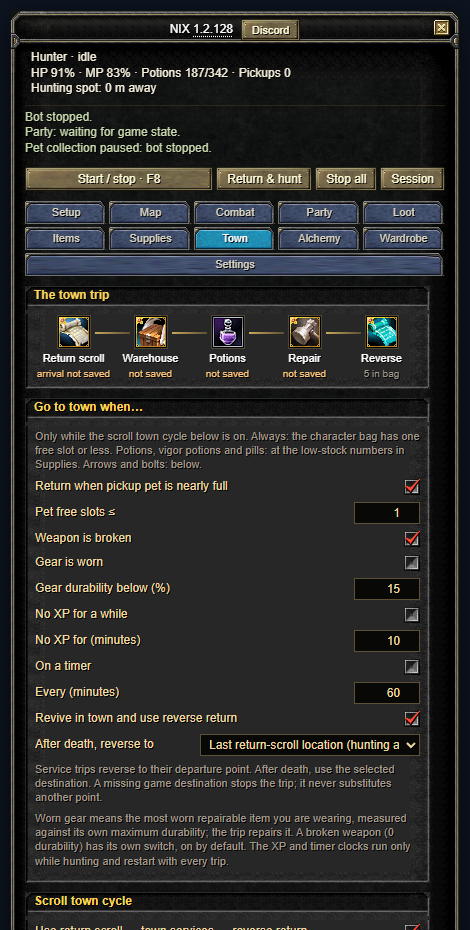
4. Pet loot
- Summon your pickup pet in the game.
- In Loot, set Default collector to Pickup pet, and under Who picks up what choose what the pet collects and what the character takes.
- Turn the pet bag full chime on if you want to hear when its bag fills (use Test pet chime once so your browser allows sound).
The pet collects while you fight. The status line shows what it is doing.
What happens to the pet's loot in town
- Elixirs, magic stones and attribute stones go to the warehouse. Stones are also stored from your own bag. Tick Magic stones and Attribute stones in Loot to collect them.
- Star, Moon and Sun (SoX) gear goes to the warehouse too, from your bag and from the pet, unless it belongs to a saved buff set, is the weapon chosen for alchemy, or matches your Keep in pet names. You can also list character levels (for example 85 or 80-90) under Also deposit gear requiring level to store that gear as well.
- Other pet loot is sold at the repair merchant. Potions, scrolls, supplies, seal or rare gear and anything matching Keep in pet (names) are protected; everything else the pet carries is sold, including lucky powders and attribute tablets. Put a name in Keep in pet to protect something, and untick categories in Loot that you do not want collected.
Tick Equipment: only SoX in Loot to collect only Star, Moon and Sun equipment; other categories follow their own checkboxes. A SoX pickup shows a notice and plays a chime, and Settings → Session stats counts them.
5. Optional features
Anti-stuck
In Settings → Anti-stuck. If nothing is killed, gained or picked up for a few minutes, the bot drops its target, then walks back to the hunting spot, and finally stops. It is on by default.
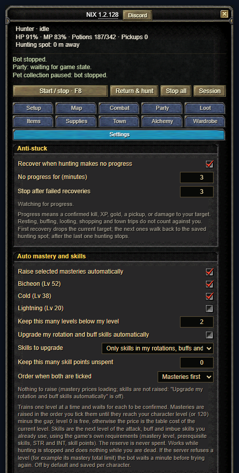
Party
On the Party page, tick Buff and heal party members to support your party with your own skills: a group heal when enough members are low, a heal on the lowest member, then party buffs on whoever is missing them (each buff can be limited to named members). It only casts on members in view within the support range and never walks to them. The same page has auto-recruit and auto-accept party-matching applicants, accept a resurrection from a party member (and resume hunting afterwards), and resurrect fallen party members yourself. All off by default.
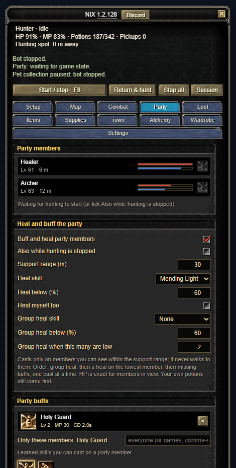
Auto mastery and skills
Spends skill points for you, one confirmed level at a time: tick the masteries you want and the bot raises them in that order up to your level (minus an optional gap). It can also learn the next level of the skills in your rotations and buffs, and it never spends the reserve you set. Off by default.
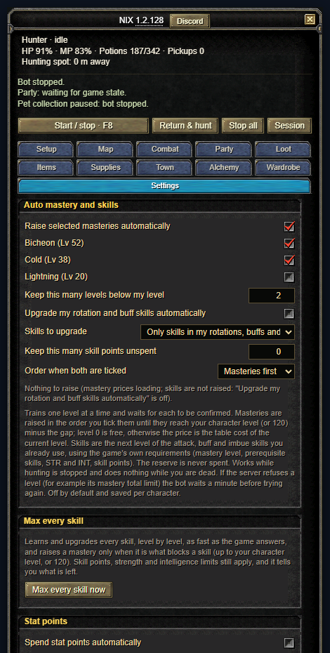
Following a party member
On the Party page, tick Follow a party member while hunting, choose the member (the party leader by default) and how close to stay. The bot walks to them whenever they get farther away and hunts around them instead of around your saved spot, so it works like an auto trace. It does not follow into a dungeon or another area, and your saved hunting spot is used again as soon as following is off or the member is unavailable.
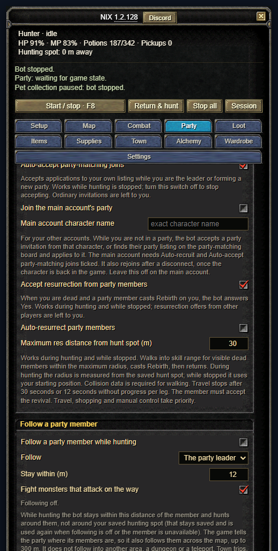
Activity log and session window
Under Settings → Recent activity the bot keeps a detailed history of what it did, with filters, search, pause and an export you can preview before saving (names and positions are left out unless you tick raw; nothing is uploaded). The Session button, or Pop out session totals and log in Settings, opens a floating window with your session totals and the same log. It stays on screen when you minimise the bot and closing it does not stop hunting.
Stat points
Under Settings → Stat points, tick Spend stat points automatically and the bot spends your unspent points on Strength and Intelligence as you level up, one confirmed point at a time. The two shares are a ratio: 1 and 0 is all Strength, 0 and 1 is all Intelligence, 2 and 1 is two Strength for every Intelligence. Keep this many points unspent holds some back. It is off by default.
Share and import settings
Under Settings → Share and import settings, Copy share code or Save share file gives a short code or file with only the settings you changed from the defaults. It never includes your hunting spot, town points, routes, buff weapon sets or wardrobe, so you can post it in Discord for anyone to use. To load one, paste the code (or open the file) and press Preview import: the bot lists what would change, and nothing changes until you press Apply import. Your own positions and town points are kept, and Undo last import brings your old settings back.
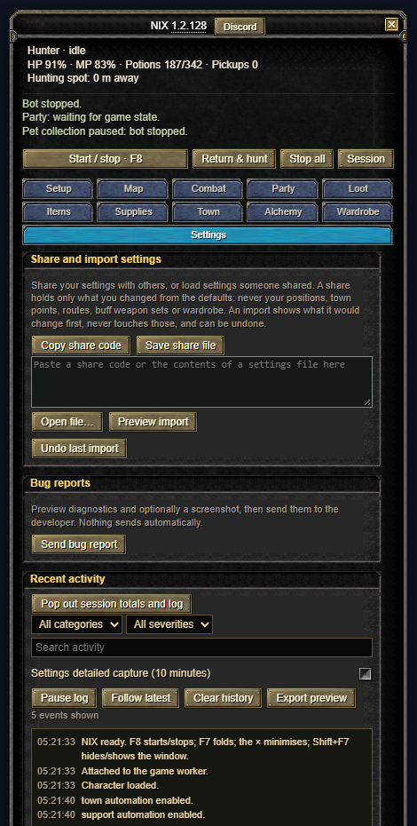
Pet recovery kits and vigor potions
Under Supplies → Automatic potion use (the potions screenshot above): tick Use recovery kits on my pets to heal an attack or pickup pet below the HP you set.
Reconnect
Always on. After a server restart or a dropped connection the bot waits for the game, reconnects, and resumes hunting if it was hunting. It never types or stores your password; if the login is gone it tells you and waits for you to log in. Logging out yourself cancels it.
Item alchemy
The Alchemy tab enhances one item from your bag with elixirs: a weapon, shield, armour piece or accessory, each with its own kind of elixir. Failed attempts can lower, damage or destroy the item, so set a sensible Target + and attempt limit and stop hunting first. Under the settings the tab shows the chance of the next attempt and how many elixirs you should expect to need, taken from the server's own data, and a Results panel keeps count and a log.
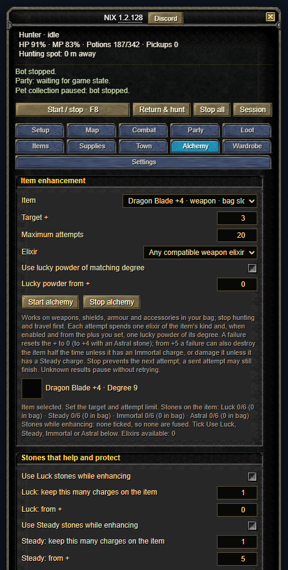
Under Stones that help and protect tick Use Luck / Steady / Immortal / Astral stones while enhancing for the helpers you want, set how many charges to keep on the item (1 to 6) and the plus each is used from. Luck raises the enhancement success chance, Steady stops durability damage, Immortal stops destruction when an enhancement fails from +5, and Astral keeps +4 instead of resetting to 0. The stones must be of the item's degree and in your bag; when the item has fewer charges than you asked to keep, one is fused automatically before every attempt at or above its plus. Fuse stones now ignores the plus and only fills the charges.
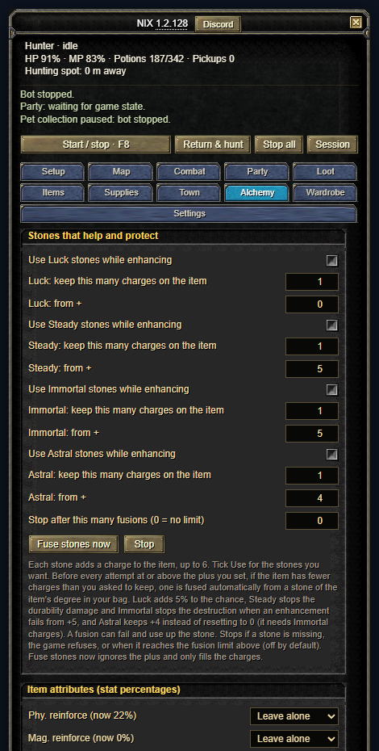
Item attributes
Under Item attributes (stat percentages) pick, for the item selected at the top, the lowest percentage you want for each stat. Press Fuse attribute stones and the bot fuses attribute stones of the item's degree until every picked stat reaches its target. A successful fusion rolls the stat again, so it can come out lower, and it can re-roll another stat of the item, so the bot keeps checking all of them. The chance is 50% per stone before bonuses and the 80% and 100% steps are rare, so keep the stone limit (100 by default) sensible. It stops if a stone of the right kind is missing from the bag.
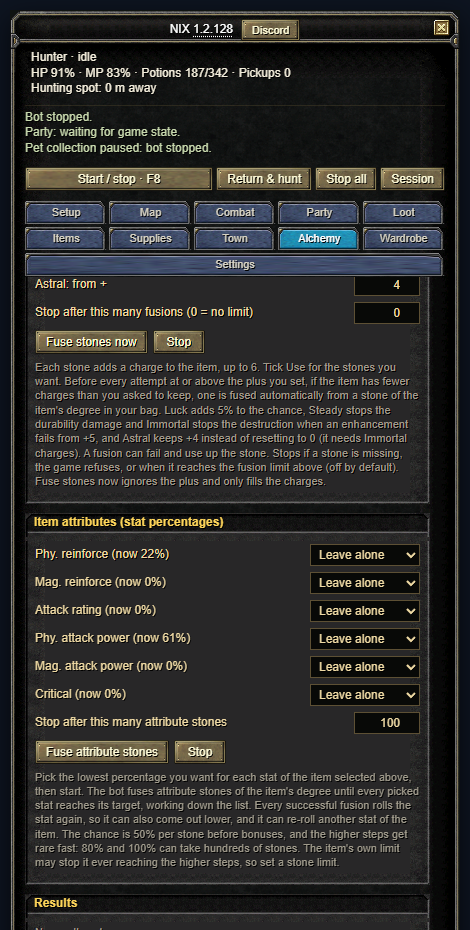
6. If something goes wrong
The status line at the top of the panel says what the bot is waiting for. The common messages:
Questions, suggestions and bug reports are welcome on Discord. The Discord button at the top of the bot panel opens the same invite, and patch notes are posted there.
Still stuck? Use Settings → Send bug report. It opens a window with a diagnostics preview (no names, chat or locations), an optional note and screenshot, and nothing is sent until you press Send to developer. You can also open an issue.
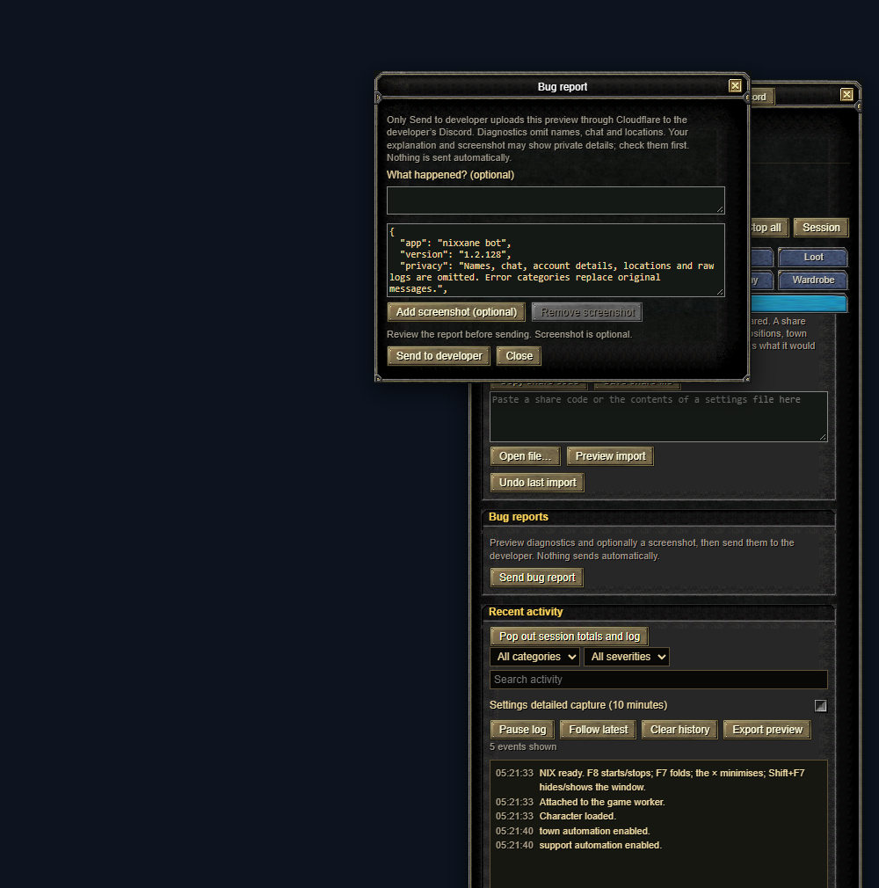